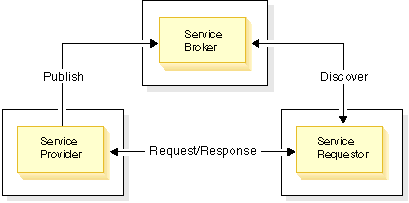
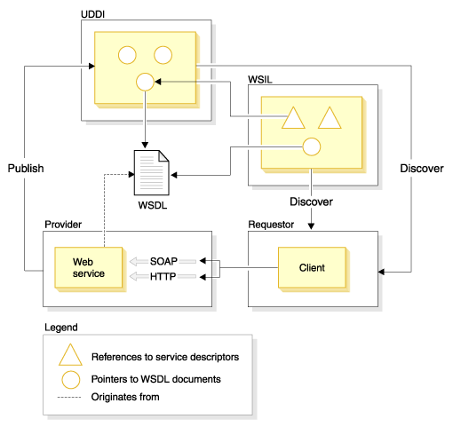

A Web service is a set of related application functions that can be programmatically invoked over the Internet. Businesses can dynamically mix and match Web services to perform complex transactions with minimal programming. Web services allow buyers and sellers all over the world to discover each other, connect dynamically, and execute transactions in real time with minimal human interaction.
Web services are self-contained, self-describing modular applications that can be published, located, and invoked across the Web.
Web services are self-contained. On the client side, no additional software is required. A programming language with XML and HTTP client support is enough to get you started. On the server side, a Web server and servlet engine are required. The client and server can be implemented in different environments. It is possible to Web service enable an existing application without writing a single line of code.
Web services are self-describing. The client and server need to recognize only the format and content of request and response messages. The definition of the message format travels with the message; no external metadata repositories or code generation tools are required.
Web services are modular. Simple Web services can be aggregated to form more complex Web services either by using workflow techniques or by calling lower layer Web services from a Web service implementation.
Web Services are platform independent. Web services are based on a concise set of open, XML-based standards designed to promote interoperability between a Web service and clients across a variety of computing platforms and programming languages.
Web services might be anything, for example, theatre review articles, weather reports, credit checks, stock quotations, travel advisories, or airline travel reservation processes. Each of these self-contained business services is an application that can easily integrate with other services, from the same or different companies, to create a complete business process. This interoperability allows businesses to dynamically publish, discover, and bind a range of Web services through the Internet.
Web services can be grouped into three categories:
Business information. A business shares information with consumers or other businesses. In this case, the business is using Web services to expand its scope. Examples of business informational Web services are news streams, weather reports, or stock quotations.
Business integration. A business provides transactional, "for fee" services to its customers. In this case, the business becomes part of a global network of value-added suppliers that can be used to conduct commerce. Examples of business integration Web services include bid and auction e-marketplaces, reservation systems, and credit checking.
Business process externalization. A business differentiates itself from its competition through the creation of a global value chain. In this case, the business uses Web services to dynamically integrate its processes. An example of business process externalization Web services is the associations between different companies to combine manufacturing, assembly, wholesale distribution, and retail sales of a particular product.
A network component in a Web Services architecture can play one or more fundamental roles: service provider, service broker, and service client.
Binding involves establishing all environmental prerequisites that are necessary to successfully complete the services. Examples of environmental prerequisites include security, transaction monitoring, and HTTP availability. The relationships between these roles are described in Figure 1.
Figure 1. Service roles and interactions.

One of the key attributes of Internet standards is that they focus on protocols and not on implementations. The Internet is composed of heterogeneous technologies that successfully interoperate through shared protocols. This prevents individual vendors from imposing a standard on the Internet. Open Source software development plays a crucial role in preserving the interoperability of vendor implementations of standards.
The following standards play key roles in Web services: Universal Description, Discovery and Integration (UDDI), Web Services Description Language (WSDL), Web Services Inspection Language (WSIL), Simple Object Access Protocol (SOAP) and Web Services Interoperability (WS-I). The relationship between these standards is described in Figure 2.
The UDDI specification defines open, platform-independent standards that enable businesses to share information in a global business registry, discover services on the registry, and define how they interact over the Internet. For more information on UDDI, refer to www.uddi.org
WSIL is an XML-based open specification that defines a distributed service discovery method that supplies references to service descriptions at the service provider's point-of-offering, by specifying how to inspect a Web site for available Web services. A WSIL document defines the locations on a Web site where you can look for Web service descriptions. Since WSIL focuses on distributed service discovery, the WSIL specification complements UDDI by facilitating the discovery of services that are available on Web sites that may not be listed yet in a UDDI registry. A separate topic in this documentation discusses the Relationship between UDDI and WSIL. For more information on WSIL, refer to www.ibm.com/developerworks/webservices/library/ws-wsilspec.html
WSDL is an XML-based open specification that describes the interfaces to and instances of Web services on the network. It is extensible, so endpoints can be described regardless of the message formats or network protocols that are used to communicate. Businesses can make the WSDL documents for their Web services available though UDDI, WSIL, or by broadcasting the URLs to their WSDL via email or Web sites. WSDL is described as a separate topic in this documentation. For more information on WSDL, refer to www.w3.org/TR/wsdl
Figure 2. Relationships between SOAP, UDDI, WSIL and WSDL.

A service provider hosts a Web service and makes it accessible using protocols such as SOAP/HTTP or SOAP/JMS. The Web service is described by a WSDL document that is stored on the provider's server or in a special repository. The WSDL document may be referenced by the UDDI business registry and WSIL documents. These contain pointers to the Web service's WSDL files.
The WS-I Simple SOAP Binding Profile and WS-I Attachments Profile are outlines of requirements to which WSDL and Web service protocol (SOAP/HTTP) traffic must comply in order to claim WS-I conformance. The Web services WS-I validation tools currently support WS-I Simple SOAP Binding Profile 1.0 and the Attachment Profile 1.0. To view the specifications, refer to the WS-I Web site, and under Resources select Documentation: http://www.ws-i.org
For more information on Web services, refer to www.ibm.com/developerworks/webservices
(C) Copyright IBM Corporation 2000, 2005. All Rights Reserved.